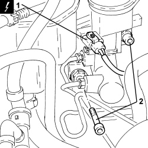
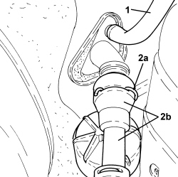
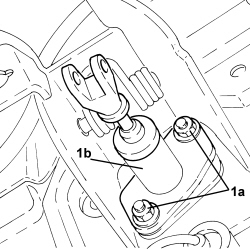
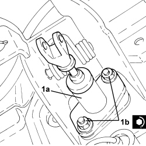
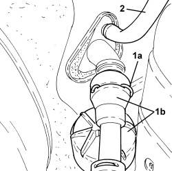
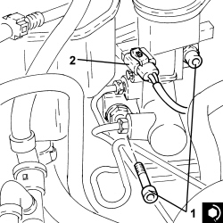

1820B20 MASTER CYLINDER (PUMP) - R + R
- Path
- Procedures > 18 CLUTCH UNIT > 1820 CLUTCH RELEASE CONTROLS > 1820B HYDRAULIC CLUTCH SYSTEM > 1820B20 MASTER CYLINDER (PUMP) - R + R
- Kind
- repair procedure (removal / refitting; the operation number is the code)
- Applies to
- all engines; all production periods
- Interactive page
- https://sloeber94.github.io/elrnDB-aBrrSpdr/en/#/946002047
Applies to: all engines; all production periods
 Removing
Removing
 Refitting
Refitting- Make sure that the ignition key is in the OFF position, then disconnect the battery terminal (-).
Description | Connector | |
|---|---|---|
- | Battery |
Op. 7040A37 FUSE BOX COVER IN INSTRUMENT PANEL - R.R
Op. 5505A43 CONTROL UNIT (DIGITAL NETWORK NODE) IN DRIVER'S DOOR - R.R. WITH PANEL REMOVED
Op. 3330B26 CLUTCH PEDAL - R+R
1. Disconnect the electrical connection from the brake fluid minimum level warning light switch.
Description | Connector | |
|---|---|---|
1 | Brake fluid level sensor (switch) |
2. Undo the bolts fixing the brake servo to the pedal assembly.

Applies to: all engines; all production periods
1. Disconnect the flexible pipe from the clutch reservoir to the master cylinder, master cylinder side.
2. Lift the retaining clip (2a) and disconnect the clutch hydraulic circuit vibration damper (2b), clutch master cylinder side.

Applies to: all engines; all production periods
1. Undo the nuts (1a) and remove the master clutch cylinder (1b) from the pedal.

Applies to: all engines; all production periods
Refitting
Removing1. Place the clutch master cylinder (1a) in its housing and secure it by tightening the nuts (1b) to the recommended torque.
Component | Fastening | dia | Value (daNm) | Validity |
|---|---|---|---|---|
Clutch master cylinder | Nut | M8 | (pedal assembly side) 2.2 - 2.6 |

Applies to: all engines; all production periods
1. Fit the retaining collar (1a) fully, then fit the clutch hydraulic circuit vibration damper (1b) on the clutch master cylinder until the clip fastens.
2. Connect the flexible pipe from the clutch reservoir to the master cylinder, master cylinder side.

Applies to: all engines; all production periods
1. Tighten the bolts fixing the brake servo to the pedal assembly to the recommended torque.
Component | Fastening | dia | Value (daNm) | Validity |
|---|---|---|---|---|
Brake servo | Bolt | M8 | (pedal assembly side) 2.2 - 2.6 |
2. Connect the electrical connection from the brake fluid minimum level warning light switch.

Applies to: all engines; all production periods
Op. 3330B26 CLUTCH PEDAL - R+R
Op. 5505A43 CONTROL UNIT (DIGITAL NETWORK NODE) IN DRIVER'S DOOR - R.R. WITH PANEL REMOVED
Op. 7040A37 FUSE BOX COVER IN INSTRUMENT PANEL - R.R
Op. 0010T64 BRAKE AND/OR CLUTCH FLUID CHECK LEVEL AND TOP UP AS NECESSARY
Op. 0010T67 HYDRAULIC CLUTCH SYSTEM - BLEED AIR
- Connect the negative battery terminal.
Topics linked from this page (7)
- 0010T64 BRAKE AND/OR CLUTCH FLUID CHECK LEVEL AND TOP UP AS NECESSARY
- 0010T67 HYDRAULIC CLUTCH SYSTEM - BLEED AIR
- 3330B26 CLUTCH PEDAL - R+R
- 5505A43 CONTROL UNIT (DIGITAL NETWORK NODE) IN DRIVER'S DOOR - R.R. WITH PANEL REMOVED
- 7040A37 FUSE BOX COVER IN INSTRUMENT PANEL - R.R
- A001 BATTERY
- K025 BRAKE FLUID LEVEL SENSOR (SWITCH)